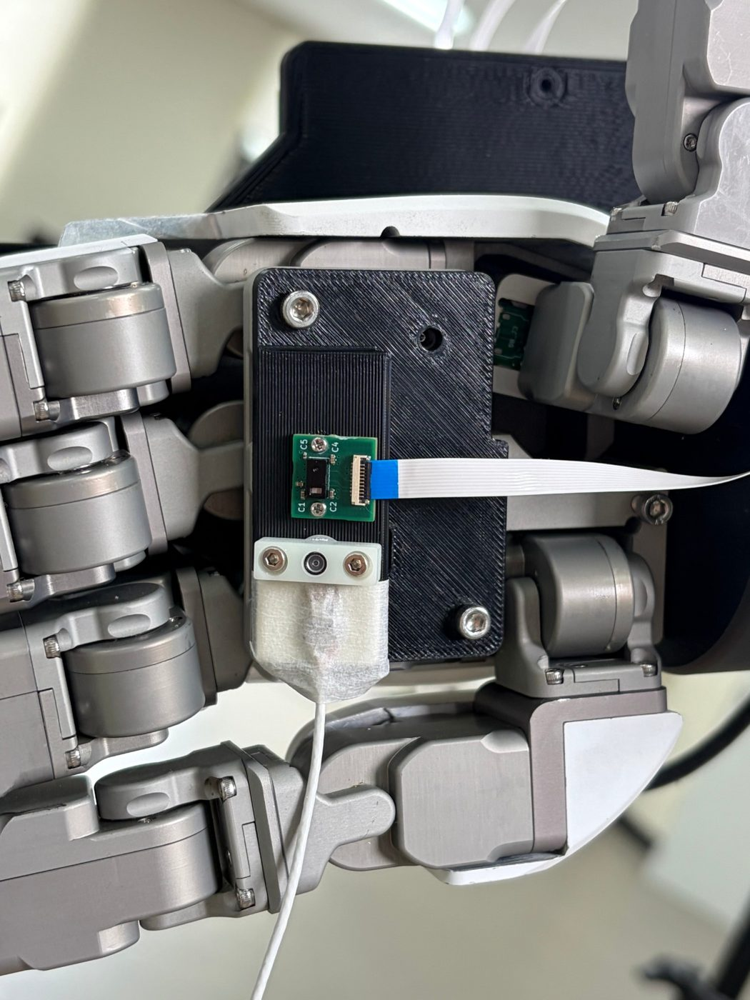

The lit task cannot show what the ToF adds, so we are moving to the dark
In yesterday's pilot the cameras still saw the puck after the stage moved it (the wrist camera in 14 of 14 cases), so a camera-only policy needs no proximity sensing there. Next we switch to retrieving an object from a dark bookshelf behind a blackout curtain. There the cameras see nothing, but the hand's ToF sensors bring their own infrared light and still measure distance.
The goal
One task where proximity sensing beats vision
- The claim we need to show: on at least one task, a VPLA (vision + proximity + language → action: the π0.5 policy that also reads the hand's ToF proximity sensors) succeeds where a VLA (the same policy with cameras only) fails.
- So the task must defeat the cameras but not the ToF. The ToF sensors on the palm and fingertips are active: each sends out its own infrared light and measures distance on a small grid, at close range. They need no room light. In the lit chopstick task, no policy we trained with the ToF did better than the camera-only policy: the wrist camera already saw the chopstick.
22 October 2026
What we tried: moving the object under the hand, in normal light
- The idea: the hand hovers over a white puck. When the operator presses a key, a motorised XY stage under a felt board moves the puck 50–80 mm sideways, using a magnet underneath. We hoped the hand itself would hide the moved puck from the cameras, so that only the palm ToF could tell where it went.
- Four teleop episodes were recorded, with a human driving the robot with the glove: two single shifts (70 mm at +16°; 58.4 mm at +44°) and one sweep of 12 stops (50, 60, 70, 80 mm × −45°, 0°, +45°). The fourth episode is unusable because the wrist camera froze.

The palm sensors



One shift, seen by every sensor

Episode 3 (58.4 mm at +44°), the same view

Why the fingertip ToF sensors are not shown
The six fingertip/thumb ToF sensors are not shown: the index/middle 45° sensors and the thumb-palmar sensor see the hand's own fingers (~20–80 mm across the whole field); the forward-looking fingertip sensors change during the shift, but by the same amount in equal-length windows without a shift, because the operator's fingers kept moving (hand joints 4–7° in the window), so they cannot be credited with seeing the puck.
More rig footage: the stage visiting many positions, and the control panel
Review of the 22 October episodes
Why this task cannot show the ToF's value: the cameras still see the moved puck
- Wrist camera: it saw the puck after the shift in 14 of 14 cases (2 shifts and 12 sweep stops, every size from 50 to 80 mm and every angle from −45° to +45°). It already saw it at the moment the operator triggered the shift in 2 of 2 cases.
- Ego camera: the puck is a ~10-pixel white spot next to the fingers in both shifts. That is small, but it is visible.
- Palm camera: it saw the puck at every sweep stop and in both shifts.
- Palm ToF: at the hover the puck sat near the top edge of the ToF field, not under the palm centre. After the shift it was at the edge of the field or outside it in 5 of 12 sweep stops.
- Why: the wrist camera looks past the fingertips. The hand hides only what lies behind its own body, and no shift size, angle or puck size changes that.
Conclusion: in normal light, vision already solves the relocation, so this task cannot show that proximity sensing helps. To hide the object from every camera, we need darkness or a physical barrier, not the hand.

Next: being built now
The new task: retrieve an object from a dark bookshelf behind a curtain
- Setup: the robot reaches through a strip blackout curtain into a dark bookshelf compartment and picks up the object. The main object is a mini Pringles can. A person places it by hand at a random spot inside a masking-tape area.
- Same instruction every time: one generic prompt, so an unseen object brings no new word.
- Teleoperation in the dark: the operator drives the robot while watching an infrared camera view. The policy does not get that view.
- Why it fits: inside the box the wrist, palm and ego RGB cameras see nothing, but the ToF lights the scene itself (infrared, 940 nm), so it still measures distance to the object.
Plan
- First dataset: complete darkness, one task.
- If that works: add light levels (bright, dim, dark) and compare VLA and VPLA at each, so the result is not just “a blind policy fails in the dark”.
- Generalisation: two unseen objects, still to be chosen.
- Checks before collecting: measure darkness per camera (mean image brightness, with the ToF on). Test each policy camera with a TV remote, which also emits near-infrared light: a camera that sees it would see the object by the ToF's own light. Check that the ToF sees each object.

Curtain details
- Two curtains, each cut into vertical strips with the top band left intact. The second layer is shifted by half a strip so the gaps do not line up.
- Planned: one weight per strip, so the arm lifts single strips, not the whole sheet, and the top, sides and bottom sealed against the shelf.
- The success criterion for the darkness is that no policy camera can find the object, not zero light.
For discussion today
Questions
- Light levels: should we start with darkness only and add bright and dim levels once it works, or include all three from the start?
- Reviewer objections: how much should the paper address each of these?
- “Just add a light or an LED to the hand.”
- “Use an infrared camera.” We see this as the strongest objection.
- “The task is trivial in the dark.”
- Unseen objects: which two objects should we hold out to test generalisation?